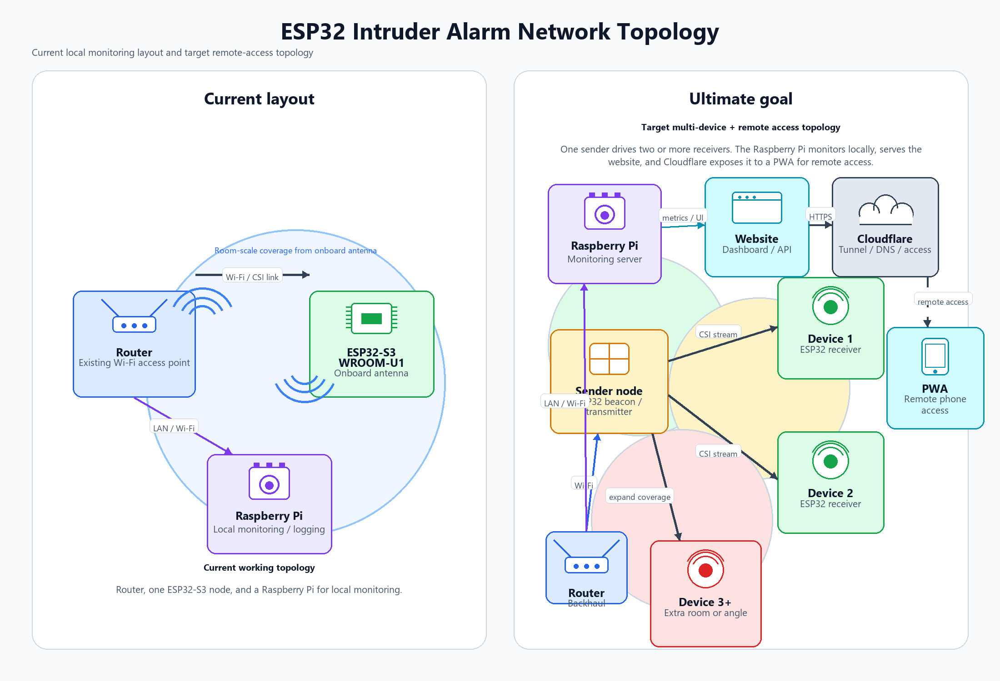
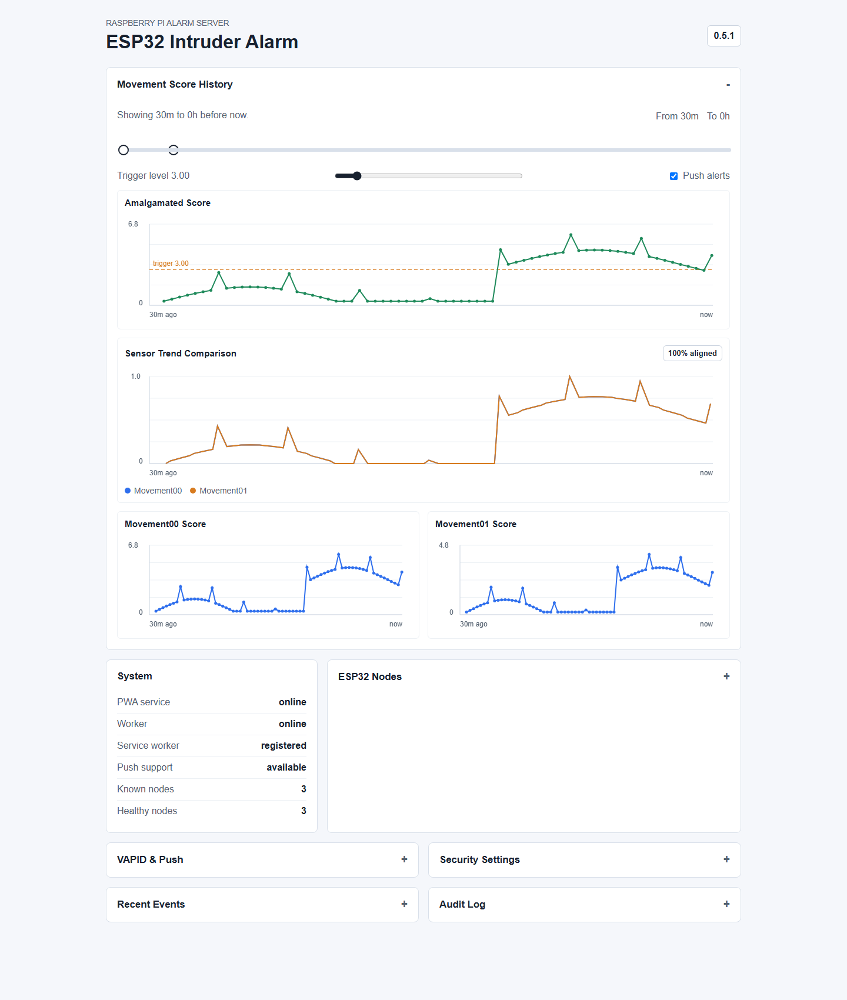
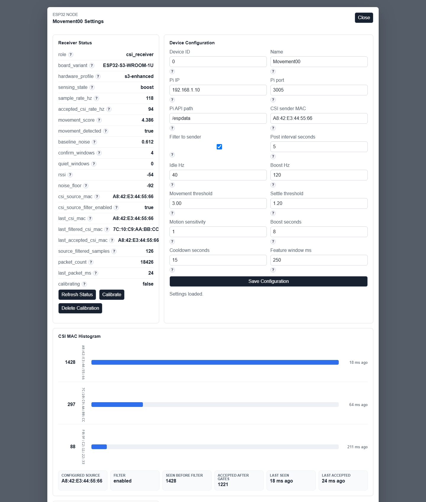

Signal
ESP32 CSI exposes amplitude, phase-like behaviour, RSSI, packet rate, and subcarrier changes rather than a single Wi-Fi strength value.
Project
Wi-Fi CSI movement sensing · ESP-IDF firmware · Raspberry Pi services · PWA dashboard · prototype v0.5.1
ESP32 Intruder Alarm explores whether ordinary 2.4 GHz Wi-Fi signals can become a privacy-preserving intruder alarm. Instead of cameras or microphones, ESP32 receiver nodes read Wi-Fi Channel State Information (CSI): the fine-grained way a radio signal changes as it passes through a room. Movement disturbs the multipath field, and those changes can be scored without recording images, speech, or identity.
The current version is a research-grade prototype, not a finished security product. The repository builds toward two ESP32-S3-WROOM-1U receiver nodes, one ESP32-WROOM-32 dedicated sender, and Raspberry Pi services that poll nodes, fuse movement scores, retain bounded history, expose a local PWA dashboard, and raise alerts only when the system is armed.

Repository topology diagram: PWA, Pi web/polling services, home router, receiver nodes, and dedicated sender.
A normal home alarm can detect doors, windows, or PIR movement, but many sensing options are either visually intrusive, blind to parts of a room, or dependent on sensors being installed exactly where movement happens. The project asks whether a small set of cheap Wi-Fi boards can detect movement through disturbances in the radio channel itself, while keeping the sensing local and avoiding camera-style privacy concerns.
The hard part is reliability. CSI movement detection is environment-specific: doors, pets, fans, neighbours' Wi-Fi, router channel changes, board orientation, and even a nudged antenna can shift the baseline. That is why the repository treats calibration, controlled sender traffic, source-MAC filtering, bounded retention, and clear prototype status as core requirements rather than polish.
ESP32 CSI exposes amplitude, phase-like behaviour, RSSI, packet rate, and subcarrier changes rather than a single Wi-Fi strength value.
The sensing target is movement in the radio field, not visible imagery, audio capture, or person identification.
It must remain honest about false positives, dead spots, static presence limits, and room-by-room calibration.

Actual Pi PWA dashboard rendered from the repository: movement history, trigger threshold, system state, push, events, and audit panels.
1. Research spike: prove that ESP32 CSI packets can be captured and plotted, and compare quiet-room traces with walking, waving, and door movement.
2. Standalone node: add SoftAP Wi-Fi provisioning, NVS credential storage, local HTML dashboard, JSON status/config APIs, rolling feature windows, LED identify mode, and telemetry posting to the Pi.
3. Pi services: split responsibilities between a TypeScript PWA/API service and a Python polling/signal worker, with SQLite/SQLCipher planned for persistent users, node state, settings, events, calibration, and push subscriptions.
4. Calibration and settings: expose node config, threshold tuning, quiet-baseline capture, persisted calibration editing, and sender source-MAC diagnostics through the Pi dashboard.
5. Three-board topology: use two ESP32-S3-WROOM-1U receivers for improved receiver-side stability, with an ESP32-WROOM-32 as a cost-efficient dedicated CSI packet sender.
6. Operational hardening: add version-aware PWA refresh, Cloudflare Access-aware error handling, Web Push support, audit logging, retention limits, and explicit degraded-coverage behaviour before treating it as an alarm.

Actual node settings modal rendered from the PWA: S3 receiver status, thresholds, source filtering, MAC histogram, and calibration controls.
Version 0.5.1 adds a separate ESP32-S3-WROOM-1U receiver build while keeping the original ESP32-WROOM-32 receiver and sender targets compatible. The S3 target compiles the same receiver source with an enhanced hardware profile: larger CSI queue, higher idle/boost rate ceilings, a 120 Hz default boost rate, larger task stacks, and board/profile reporting in status/config APIs.
The present prototype includes receiver and sender firmware, local ESP32 dashboards, Pi-facing telemetry, a TypeScript PWA/API service, movement history charts, trigger controls, node settings modals, persisted calibration forms, source-MAC diagnostics, VAPID/push administration, security setting flags, event/audit panels, and documentation for placement, hardware variants, risks, and milestones.
{
"device_id": 0,
"sample_rate_hz": 80,
"movement_score": 0.37,
"movement_detected": false,
"calibration_persisted": true,
"last_packet_ms": 20
}Shortened from the README's candidate JSON shape and implemented API fields; used here to show the kind of machine-readable status the Pi polls.